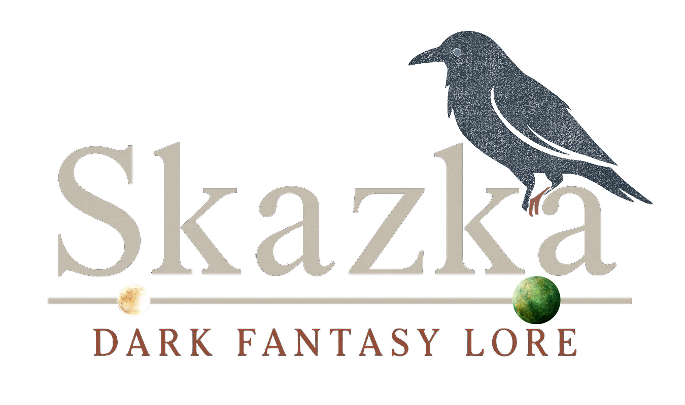

<!-- footer.html -->
<footer class="footer">
  <style>
    :root {
      --sb-divider: color-mix(in oklab, var(--sb-gold) 30%, transparent);
    }

    .footer {
      background: var(--sb-panel2);
      color: var(--sb-dim);
      border-top: 1px solid var(--sb-divider);
      padding: 3rem 1rem;
      font-family: 'Cinzel', serif;
      box-shadow: inset 0 1px 0 rgba(255, 255, 255, .03);
    }

    .footer-inner {
      max-width: 1200px;
      margin: 0 auto;
      padding: 0 8px;
      display: flex;
      flex-direction: column;
      align-items: center;
      /* center logo, tagline, links */
      text-align: center;
      gap: .85rem;
    }

    .footer-brand img {
      width: clamp(220px, 30vw, 360px);
      height: auto;
      display: block;
      filter: drop-shadow(0 2px 4px rgba(0, 0, 0, .35));
    }

    .footer-tagline {
      margin-top: .35rem;
      font-style: italic;
      color: var(--sb-gold);
    }

    /* Links row */
    .footer-links {
      margin-top: .3rem;
    }

    .footer-nav {
      list-style: none;
      /* no bullets */
      margin: 0;
      padding: 0;
      display: flex;
      gap: 1.25rem;
      /* spacing between items */
      justify-content: center;
      align-items: center;
      flex-wrap: wrap;
      /* stays one line on desktop, wraps on very small screens */
    }

    .footer-nav a {
      color: var(--sb-dim);
      text-decoration: none;
      padding: .25rem .5rem;
      border-radius: 8px;
      transition: color .25s ease, background .25s ease, box-shadow .25s ease;
      white-space: nowrap;
      /* keep each label intact */
    }

    .footer-nav a:hover {
      color: var(--sb-gold-strong);
      background: rgba(226, 184, 77, .08);
    }

    .footer-nav a:focus-visible {
      outline: none;
      box-shadow: 0 0 0 2px rgba(226, 184, 77, .25);
      color: var(--sb-gold-strong);
    }

    .footer-bottom {
      margin-top: 1.1rem;
    }

    #backToTop {
      color: var(--sb-dim);
      text-decoration: none;
    }

    #backToTop:hover {
      color: var(--sb-gold-strong);
    }

    .footer-copy {
      margin-top: .5rem;
      font-size: .95rem;
      color: #8d8576;
    }
  </style>

  <div class="footer-inner">
    <div class="footer-brand">
      
    </div>

    <p class="footer-tagline">Where shadows speak and legends walk.</p>

    <nav class="footer-links" aria-label="Important">
      <ul class="footer-nav">
        <li><a href="https://buy.stripe.com/aFabJ10kD8BN8kL8mm1ZS03" target="_blank" rel="noopener">Donate</a></li>
        <li><a href="contact.html">Contact</a></li>
        <li><a href="maps.html">Maps</a></li>
        <li><a href="timeline.html">Timeline</a></li>
        <li><a href="timeline.html">About me</a></li>
      </ul>
    </nav>

    <div class="footer-bottom">
      <a href="#" id="backToTop">Back to top ↑</a>
      <p class="footer-copy">&copy; <span id="year"></span> SkazkaWorld. All stories reserved.</p>
    </div>
  </div>
</footer>